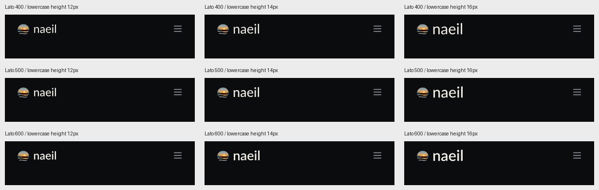
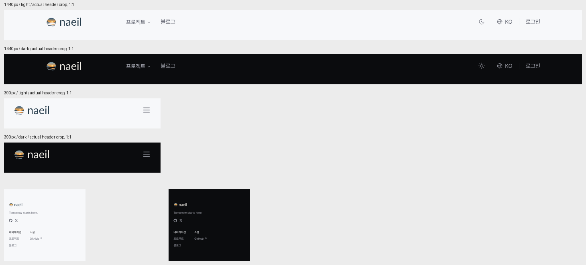

2026-10-11 · 잠정 후보의 실사용 적합성 확인 · 제품 적용 전 검증
추천: Lato Regular 400, 폰트 기본 글자 간격. 28px 심볼 상자에 간격 8px, 소문자 몸통 높이 14px를 조합한 헤더를 권한다. 이번 비교에서 차분한 인상을 유지하면서 읽기에 무리가 없었다. 다른 모든 서체보다 우수하다는 결론이나 사용자 최종 확정을 뜻하지 않는다.
| 기준 | 관찰과 판단 |
|---|---|
| 브랜드와의 관계 | 해·섬·물결이 의미를 맡고, 글자는 조용히 이름을 전달한다. 400의 열린 내부 공간과 가벼운 획이 차분함에 잘 맞는다는 시각적 판단이다. 따뜻함이 서체만으로 입증된 것은 아니다. |
| 굵기 400 / 500 / 600 | 400은 충분히 읽히고 가장 차분하다. 500은 약간 선명하지만 현재 화면에서 바꿀 만큼의 이점은 작다. 600은 글자에 무게가 몰린다. 작은 사용처마다 굵기를 달리하기보다 400의 일관성을 우선한다. |
| 글자 간격 | HarfBuzz로 naeil을 조판한 결과 세 굵기 모두 커닝 켜기/끄기 배치가 같았다. 기존 방식에 검증 공백은 있었지만 실제 커닝 오류는 확인되지 않았다. 기본 폭 52.109px, 이전 보정 폭 51.728px로 차이는 약 0.381px다(소문자 몸통 14px 기준). 수동 보정의 분명한 이점이 보이지 않아 기본값을 권한다. |
| 심볼과 글자 비율 | 심볼 28px에서 몸통 12/14/16px를 비교했다. 12px는 얌전하지만 상대적으로 약하고, 16px는 이름의 존재감이 커진다. 14px를 중간점으로 권한다. 이 수치는 CSS font-size가 아니라 n의 실제 몸통 높이다. 글자의 전체 높이는 약 20.26px다. |
| 작은 푸터 | 20px 심볼과 몸통 10px 글자는 읽을 수 있다. 그러나 섬은 작은 실루엣으로 보이며 풍경의 세부를 충분히 전달하지 못한다. 작은 심볼은 색과 전체 윤곽으로 인지하는 용도로 판단한다. |
| 라이선스와 파일 | Google Fonts 고정 커밋의 Lato 원본 3종과 SIL OFL 1.1을 보존하고 SHA-256을 대조했다. 해당 라이선스는 상업적 사용을 허용한다. 폰트 재배포 시 고지 조건을 유지해야 한다. 로고 글자는 SVG 경로여서 이용자 기기에 Lato 설치가 필요 없다. 상표 유사성 검토는 이번 범위가 아니다. |
행은 400 / 500 / 600, 열은 몸통 12 / 14 / 16px. 가운데 열의 첫 행을 추천한다. 원본 그림은 각 헤더를 1:1 픽셀로 배치했다. 보고서 창이 좁으면 그림이 축소되므로 원본을 열어 판단한다.

공개 페이지 https://naeil.dev/ko 를 Chromium의 새 브라우저 컨텍스트에서 열고, 헤더·푸터의 로고만 임시 DOM 교체했다. 1440×900과 390×844, 밝고 어두운 테마, DPR 1에서 검사했다. 메뉴의 기존 위치를 기준으로 이동·겹침·가로 넘침을 측정했다.
| 조건 | 측정 대상 링크·버튼 수 | 최대 이동 | 로고 겹침 | 가로 넘침 |
|---|---|---|---|---|
| 1440-light | 10 | 0px | 없음 | 없음 |
| 1440-dark | 10 | 0px | 없음 | 없음 |
| 390-light | 1 | 0px | 없음 | 없음 |
| 390-dark | 1 | 0px | 없음 | 없음 |
네 조건 모두 로고의 렌더 상자는 약 88.09×27.98px였다. 데스크톱 대상 수에는 크기가 남아 있는 메뉴 하위 링크가 포함될 수 있으며, 사용자에게 보이는 주요 메뉴는 캡처로 별도 확인했다. 원래 브랜드 내용 복원 후 각 컨텍스트를 닫았다.

선택했던 회색 그라데이션을 그대로 사용한 파일. 아래는 로컬 증거 페이지이며 실제 사이트 DOM 측정은 컬러 버전으로 수행했다.
이전 research-router 조사에서 얻은 기본 간격 비교, 여러 굵기·크기 비교, 실사용 배치 확인 원칙을 이번 검증에 적용했다. 새 research-router 검색은 실행하지 않았다. logo-icon-design의 실사용 검증 지침과 완료 전 근거 확인 지침을 적용했다. 실제 도구는 HarfBuzz, fontTools, librsvg, Playwright Chromium, 이미지 뷰어이며, Aside는 공개 페이지 탐색까지만 사용했다.
이 결과는 헤더·푸터의 정지 화면과 배치 검증이다. 일부 전체 화면 캡처는 히어로 콘텐츠 표시 전 상태여서 페이지 전체의 완성도 근거로 사용하지 않았다. 사용자 읽기 실험, Safari/Firefox, 고밀도 기기, 모바일 메뉴 열린 상태, 로그인 화면, 다른 언어·소비자 앱, 인쇄와 16px 파비콘은 이번에 검증하지 않았다. 회색 그라데이션은 순수 단색 인쇄 검증을 대신하지 않는다. 제품 적용 시 해당 사용처와 작은 심볼을 별도로 확인해야 한다.
현재 상태는 글꼴·굵기·간격에 근거가 보강된 추천안이다. 기존 배포용 묶음 및 제품 소스는 교체하지 않았다. 실제 적용 전 승인된 간격으로 최종 에셋 묶음을 맞추고 로그인·파비콘 등의 사용처를 확인할 단계가 남아 있다.
간격·굵기 비교 · 조판 측정값 · 브라우저 측정값 · 폰트 출처·해시 · 라이선스 · 구조·해시 확인 · 이전 과정 감사